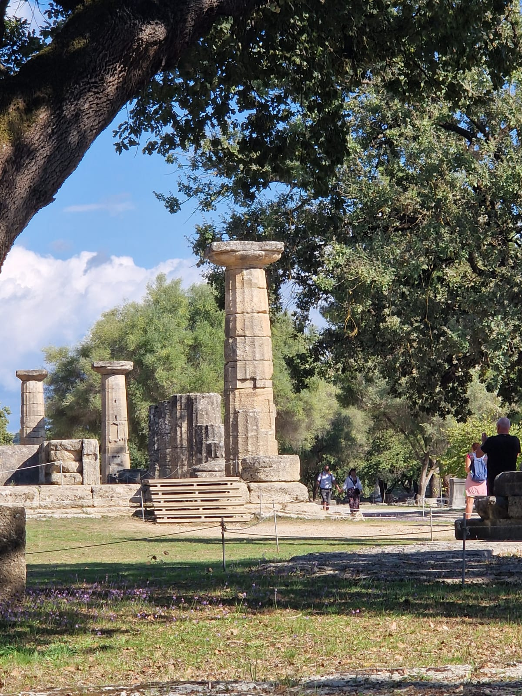
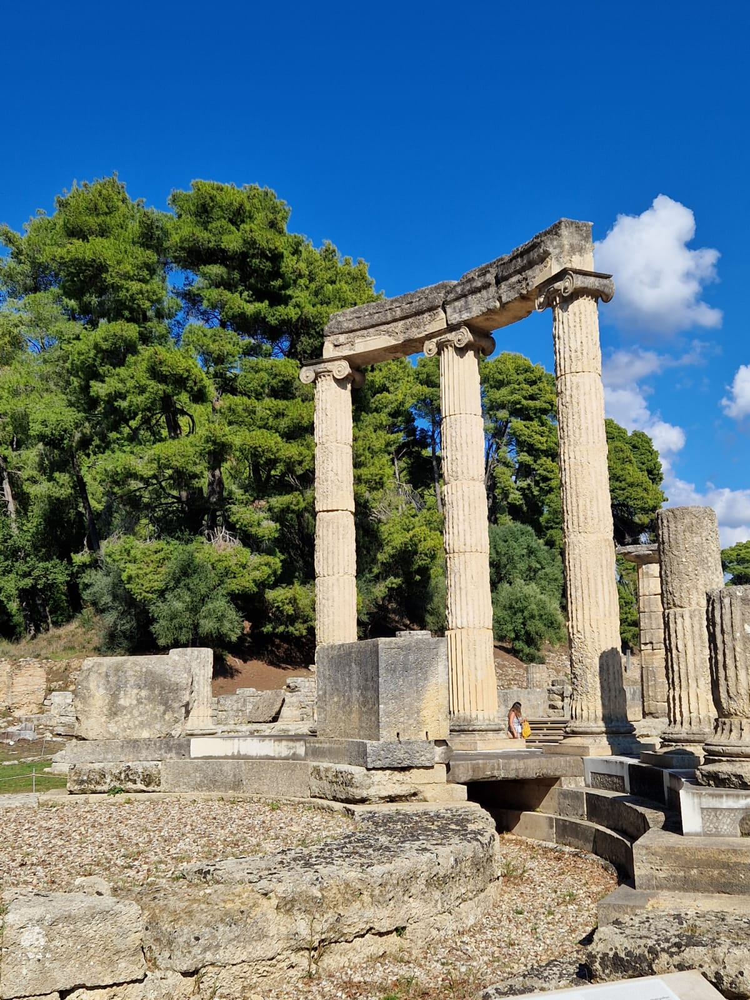
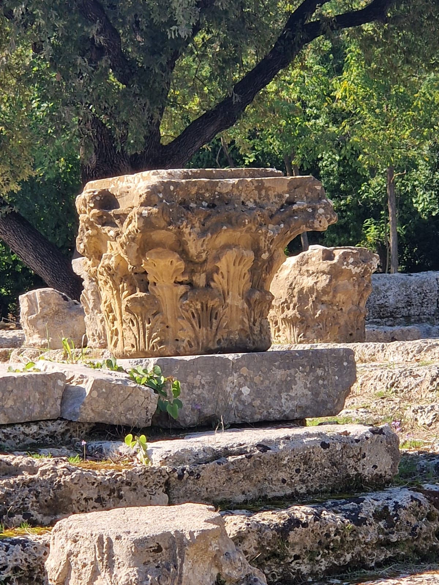
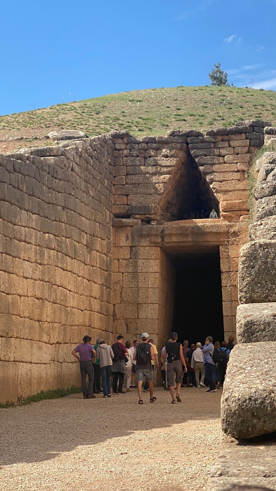
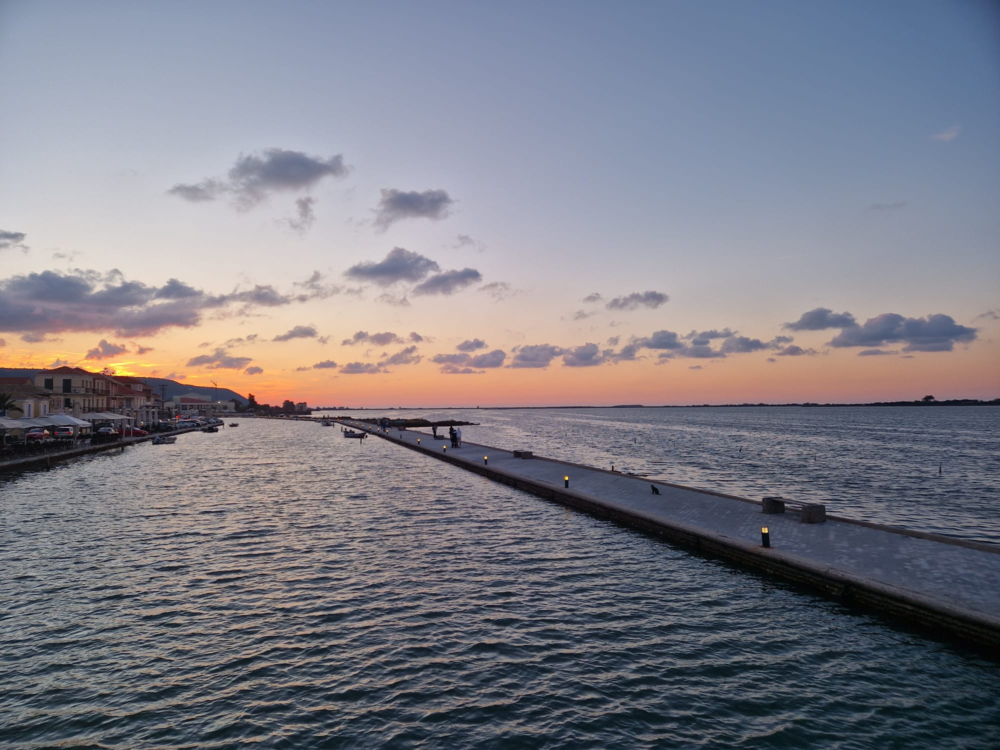

Olimpia, situata nella regione dell’Elide nel Peloponneso, fu uno dei più importanti centri religiosi dell'antica Grecia. Qui si svolgevano i celebri Giochi Olimpici in onore di Zeus, evento che segnava la pace tra le poleis greche. Gli scavi archeologici hanno riportato alla luce templi, stadi e luoghi di culto che testimoniano l’importanza culturale e spirituale di questo sito millenario.
Colonne Doriche, Ioniche e Corinzie
Colonna Dorica

La colonna dorica è caratterizzata da una semplicità robusta, con un fusto scanalato ma senza base. Il capitello è sobrio, composto da un echino e un abaco quadrato. È tipica di edifici come il Tempio di Zeus a Olimpia, rappresentando forza e stabilità.
Colonna Ionica

La colonna ionica è più slanciata, con una base distinta e un fusto scanalato. Il capitello presenta volute a spirale, conferendo un aspetto elegante e decorativo. È comune in templi come l’Eretteo ad Atene.
Colonna Corinzia

La colonna corinzia è la più ornamentale, con un capitello decorato da foglie di acanto. Il fusto è simile a quello ionico, ma il capitello elaborato la rende ideale per edifici di grande prestigio, come il Tempio di Apollo Epicurio.
Micene, situata nel Peloponneso, è uno dei più importanti siti archeologici della Grecia, cuore della civiltà micenea. Famosa per la Porta dei Leoni e le tombe a tholos, come il Tesoro di Atreo, Micene era un centro di potere e cultura tra il 1600 e il 1100 a.C. I resti delle sue mura ciclopiche e del palazzo reale testimoniavano la grandezza di questa antica città.
L'Acropoli di Micene
L'Acropoli di Micene, cuore fortificato della civiltà micenea (1600-1100 a.C.), era circondata da mura ciclopiche, così imponenti da essere attribuite ai mitici Ciclopi. Includeva il palazzo reale, templi e tombe reali, con la celebre Porta dei Leoni come ingresso, decorata da due leoni rampanti che simboleggiavano il potere dei re micenei, come il leggendario Agamennone dell'Iliade di Omero.
Gli scavi iniziarono nel 1876 per opera di Heinrich Schliemann, archeologo tedesco ispirato dai poemi omerici. Schliemann scoprì le tombe a fossa del Circolo A, con tesori d'oro, armi e la famosa "Maschera di Agamennone". I suoi lavori rivelarono la ricchezza della civiltà micenea, ponendo le basi per gli studi moderni.
Tomba di Agamennone (Tesoro di Atreo)

La Tomba di Agamennone, nota anche come Tesoro di Atreo, è una monumentale tomba a tholos del XIII secolo a.C. La sua imponente cupola, costruita con pietre ciclopiche, è tra le meglio conservate dell'epoca micenea e rappresenta un capolavoro dell'architettura funeraria.
Delfi, situata sui pendii del Monte Parnasso, era un importante santuario religioso nell'antica Grecia, famoso per l'Oracolo di Apollo. Il sito ospitava il Tempio di Apollo, dove la Pizia pronunciava profezie divine, influenzando decisioni politiche e personali in tutto il mondo greco. Delfi era considerato l'ombelico del mondo, simboleggiato dalla pietra omphalos, e attirava pellegrini per i Giochi Pitici.
Museo Archeologico di Delfi

Lefkada, un’isola ionica collegata alla terraferma da un ponte, è rinomata per le sue spiagge mozzafiato come Porto Katsiki e Egremni. La città principale, Lefkada, offre un affascinante mix di storia e cultura, con il suo castello veneziano e il museo archeologico. L’isola è anche un paradiso per gli amanti della natura e degli sport acquatici.
